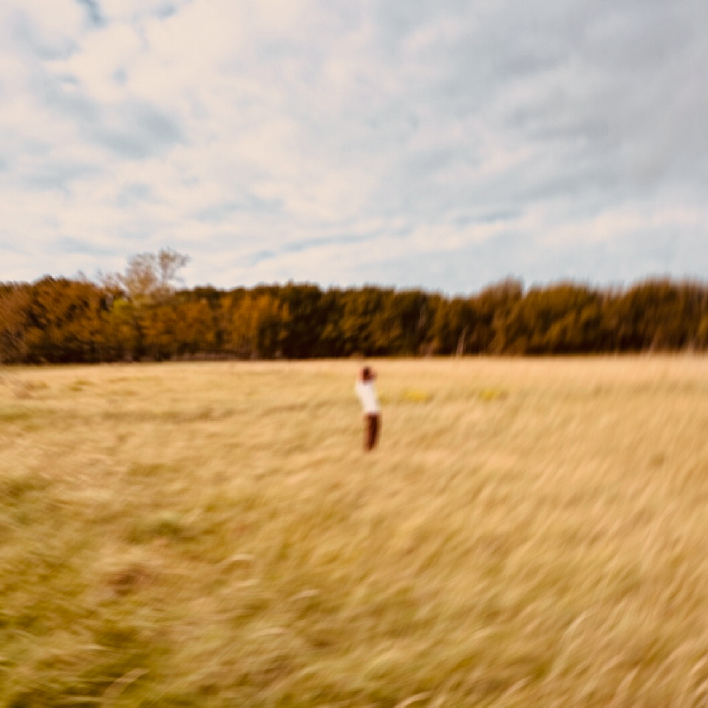

EP · Small Steps · Out now
The human experience, put into chords and melodies.

The “Small Steps EP” is a reflective collection of four simple tracks. Featuring themes of childhood wonder and playfulness, nostalgia, resilience and melancholy. Capturing the questioning and the search for belonging and significance, where nothing seems to hold meaning.
The guitar work includes fingerpicking, percussive techniques, and alternative tunings, inspired by British folk legends such as Nick Drake and John Martyn.
Recorded live at IJland Studio in Amsterdam.
| Date | City | Venue | Tickets |
|---|---|---|---|
| 14 Mar 2027 | Amsterdam | Paradiso | |
| 15 Mar 2027 | Brussels | Forest National | |
| 17 Mar 2027 | Munich | Tonhalle | |
| 18 Mar 2027 | Berlin | Verti Music Hall | |
| 22 Mar 2027 | Stockholm | Cirkus | |
| 25 Mar 2027 | London | Eventim Apollo | |
| 26 Mar 2027 | Cornwall | Eden Project | |
| 28 Mar 2027 | Paris | L'Olympia | |
| 29 Mar 2027 | Barcelona | Sala Apolo | |
| 31 Mar 2027 | Lisbon | Coliseu de Lisboa |
🙈 I wish! Not there yet… but one day
🌱 Still growing. Check back in a few years 🎸